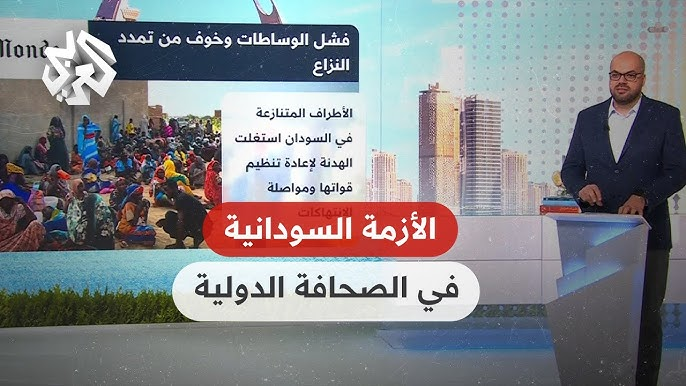

تفجّرت الأوضاع
في الليلة التي سبقت تفجّر الأوضاع عسكريًا أقام شمس الدين كباشي عضو مجلس السيادة، مائدةَ إفطارٍ رمضاني بالنادي الوطني بالخرطوم، حضرها البرهان وقادة مجلس السيادة، وممثلو البعثات الدبلوماسية، ولم يغب عنها من رجال الدولة غير محمد حمدان دقلو (حميدتي)، قائد قوات الدعم السريع، وأخوه عبد الرحيم دقلو قائد ثاني ذات القوات، وكان من المفترض أن يعقب الإفطار لقاءٌ بين قائدَي الجيش والدعم السريع، البرهان وحميدتي، لتجاوز الأزمة، والبحث عن حلول قبل الانفجار المسلح. تتوسط في اللقاء لجنةٌ مكونةٌ من قادة الحركات المسلحة، غير أنّ اللجنة فشلت في الجمع بين الطرفين.
وكان من المقرر أن يجتمع البرهان بقادة الجيش من رتبتَي اللواء والعميد في وقت متأخر من ذات المساء، إلّا أنَّ الاجتماع تأجل إلى الثامنة من صباح الغد، الخامس عشر من أبريل/نيسان.. قال محدثي الضابط الرفيع في الجيش السوداني: إنّ المدعوين من الضباط أخذوا يتوافدون على القيادة العامة بعد صلاة الفجر، لحضور اجتماع التنوير في الثامنة صباحًا، وبينما نحن نتهيأ للاجتماع انفجرت الأوضاع، وتلقت القيادة الهجوم الأول، والحديث لمحدثي الضابط الرفيع.
وسرعان ما صدرت التعليمات، من الفريق رشاد عبد الحميد إسماعيل، قائد القوات البرية بأنْ يتوجه الضباط فورًا إلى وحداتهم العسكرية، ويضيف محدثي: وتوجهت على الفور إلى منطقة المهندسين العسكرية بأم درمان. إذن أصبحت الخرطوم في الخامس عشر من أبريل/نيسان 2023م على دوي المدافع، وأزيز الرصاص، ولعلعة الأسلحة: ثقيلها وخفيفها، خاصة جنوبي الخرطوم، وفي المطار، وفي القيادة العامة للجيش السوداني، ومواقع عديدة أخرى .
بدت الساعات الأولى بسيطرة شبه كاملة لقوات الدعم السريع على الفضاء الإعلامي، حيث بادرت ببثِ صورٍ تؤكد سيطرتها على مواقع كثيرة، منها مطارا الخرطوم ومروي الدوليان، تلت ذلك تصريحات لمحمد حمدان دقلو (حميدتي) تؤكد سيطرة قواته على الأوضاع برًا وجوًا، وتطالب البرهان بالاستسلام، ولكن عند منتصف النهار تراجعت الصورة، وبدا أنَّ أمام "الدعم السريع" الكثير لتؤكد هذه المعلومات.
الكَرَّةُ التي بدت حاسمة استخدامُ الجيش سلاحَ الطيران، إذ إن اللواء طلال علي الريح، قائد القاعدة الجوية بمنطقة وادي سيدنا العسكرية، قام بتنفيذ طلعات جوية استطاعت تدمير نسبة معتبرة من المقرات الهامة للدعم السريع، خاصة مقر قيادتها الرئيسة في منطقة الخرطوم شرق، المواجهة للقيادة العامة للجيش، ومقرها في هيئة العمليات التي كانت تتبع لجهاز المخابرات العامة، وقد تم تمليكها للدعم السريع بعد حلّ الهيئة.

في ظل تدفقات السلاح وشبح المجاعة، هل تنجح جهود السلام في إنهاء الأزمة في السودان؟
قصف صدر الصورة،Reuters
التعليق على الصورة،أطلق الجيش السوداني عملية لاستعادة المناطق التي تسيطر عليها قوات الدعم السريع
Article information
Author,باربرا بليت أشر
Role,مراسلة الشؤون الأفريقية - بورت سودان
3 أكتوبر/ تشرين الأول 2024
يقول مساعد القائد العام للجيش السوداني الفريق إبراهيم جابر لبي بي سي إن الجيش سيواصل هجماته على الرغم من الجهود الدولية للتوسط في وقف لإطلاق النار وإنهاء الحرب الأهلية المستمرة منذ 17 شهراً.
الجنرال السوداني أضاف أن "محادثات السلام يمكن أن تستمر، لكن الجيش لن يتوقف عند ذلك".
ويأتي ذلك بعد أيام قليلة من إطلاق الجيش عملية عسكرية لاستعادة السيطرة على العاصمة الخرطوم من يد قوات الدعم السريع شبه العسكرية.
ويستمر القتال بين الجانبين منذ أبريل/نيسان الماضي عندما اختلف قادتهما حول مستقبل البلاد، ما أدى إلى كارثة إنسانية، بعد أن أصبح أكثر من نصف سكان السودان، يعانون من الجوع، في حين أُجبر الملايين على ترك منازلهم.
كما ألمح الجنرال في المقابلة الطويلة التي أجرتها معه بي بي سي، إلى أن السلطات السودانية أكملت تعاملات لشراء أسلحة من إيران، نافياً أن تكون بلاده في مجاعة.
تخطى قصص مقترحة وواصل القراءة
قصص مقترحة
ترامب وهاريس
انتخابات أمريكية ساخنة في ظل أزمة عميقة
علما الولايات المتحدة وإيران
"إسرائيل والولايات المتحدة تحثان إيران من خلف الكواليس على إنهاء الهجمات المتبادلة" - واشنطن بوست
قوات الدعم السريع
حرب السودان: هل يتهدد خطر التقسيم وحدة البلاد؟
صورة من حلقة بي بي سي اكسترا عن الوضع في لبنان
كيف يعيش الشباب اللبناني في ظل الحرب؟
قصص مقترحة نهاية
وقال جابر إنه "عندما يتفق الطرفان (على وقف إطلاق النار)، يمكن للجيش أن يتوقف"، مكرراً مطالب الجيش بانسحاب قوات الدعم السريع من المناطق التي احتلتها.
وأضاف: "فليمارس المجتمع الدولي الضغط على الميليشيا لوقف القتال وترك المنازل التي استولت عليها"، مؤكداً أنه أصبح "أكثر ثقة" الآن بعد أن أصبح لدى الجيش القوة اللازمة للاستمرار في القتال.
واعترف المبعوث الأمريكي للسودان توم بيرييلو هذا الأسبوع بأن المحاولات الدبلوماسية الجديدة للتفاوض على وقف الأعمال العدائية "فشلت في إحراز أي تقدم".
وقال لوسائل إعلام في العاصمة الكينية نيروبي: "الوضع رهيب للغاية وأولئك الذين في موقع يسمح لهم بوقف ما يحدث، يبدو أنهم حريصون بدلاً من ذلك على زيادة حدة التوتر".
وأشار إلى بعض التحسن في وصول المساعدات الإنسانية، مشيراً إلى أن بضع مئات من الشاحنات المحملة بالمساعدات تمكنت من الوصول إلى المناطق التي كانت محظورة في السابق.
وأوضح أنه "من الواضح أننا بحاجة إلى أن نشاهد أحجاماً مختلفة تماماً عن ذلك"، في إشارة إلى زيادة حجم المساعدات.
ومنع الجيش السوداني عبور شحنات المساعدات من نقطة حدودية هامة تسيطر عليها قوات الدعم السريع بين تشاد ودارفور لعدة أشهر، لكنه استأنف السماح بمرورها مرة ثانية في أغسطس/آب الماضي، كما تعهدت قوات الدعم السريع بتسهيل عمليات تسليم المساعدات في المناطق التي تسيطر عليها.
تحقيق خاص - المسيّرات الأجنبية تغيّر مسار الحرب في السودان
البرهان يدعو الأمم المتحدة لتصنيف قوات الدعم السريع جماعة إرهابية
عبد الفتاح البرهانصدر الصورة،Reuters
التعليق على الصورة،دعا عبد الفتاح البرهان إلى تصنيف قوات الدعم السريع كجماعة إرهابية أمام اجتماع الجمعية العامة للأمم المتحدة
يستحق الانتباه نهاية
ونفى الجنرال جابر المزاعم التي تشير إلى أن الجيش ما زال يتباطأ في منح موافقات لدخول عمال المنظمات الإنسانية، ما أدى إلى تراجع عدد التأشيرات والتصاريح الصادرة لهم.
وأكد أن قوات الدعم السريع سرقت السلع الإنسانية، وما زالت تمنع دخول المساعدات إلى مدينة الفاشر المحاصرة في ولاية شمال دارفور.
وكرر جابر نفي الجيش لوجود مجاعة في البلاد، ملقياً باللوم مرة أخرى على قوات الدعم السريع في أزمة الجوع.
ويركز الجيش السوداني على حدود دارفور مع تشاد، لأنه يقول إنها ممر للمرتزقة والأسلحة التي تزودهم بها الإمارات بشكل خاص.
وخلصت مجموعة من الخبراء التابعين للأمم المتحدة إلى أن الأوضاع الإنسانية تمهد لمجاعة في مخيم زمزم
ولم تصدر الحكومة السودانية إعلاناً رسمياً تعترف فيه بوجود مجاعة، الأمر الذي قد يؤدي إلى إصدار قرار من مجلس الأمن التابع للأمم المتحدة لتمكين الوكالات من تقديم الإغاثة عبر الحدود.
ويركز الجيش السوداني على حدود دارفور مع تشاد، لأنه يقول إنها ممر للمرتزقة والأسلحة التي تزودهم بها الإمارات بشكل خاص.
وقال الجنرال جابر إن دعم الإمارات المزعوم لقوات الدعم السريع "يُحدث فارقاً كبيراً في الحرب لأن قوات الدعم السريع ما هي إلا ميليشيا تتلقى دعماً بأسلحة متقدمة عالية التقنية، لكنهم في نهاية المطاف لن ينتصروا في الحرب، فهي ميليشيا" على حد وصفه.
وتنفي الإمارات ما يتردد من مزاعم حول تقديمها مثل هذا الدعم لقوات الدعم السريع في السودان، لكن الأمم المتحدة تقول إن هناك أدلة موثوقة على ذلك.
وقدّم تحقيق نُشر حديثاً في صحيفة نيويورك تايمز تفاصيل واسعة النطاق حول هذه القضية.
كما وثق تقرير صادر عن منظمة هيومن رايتس ووتش غير الحكومية ومقرها نيويورك، أدلة مرئية على دخول أسلحة من الإمارات، والصين، وإيران، وروسيا وصربيا إلى السودان تحمل تواريخ تصنيع تعود إلى العام الماضي.